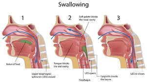
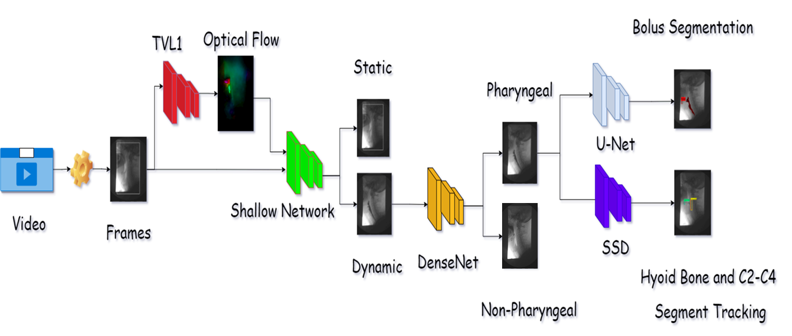

Automatic Identification of Swallowing Kinematics in VFSS

Problem Summary
Swallowing is a coordinated neuromuscular process essential for human survival, transferring food from the oral cavity to the stomach. It requires precise coordination among various anatomical structures in the head and neck, many of which are involved in both swallowing and respiration.Any dysfunction can redirect food into the airway, leading to dysphagia, which may cause severe complications such as malnutrition, dehydration, and aspiration pneumonia. Videofluoroscopic swallowing study (VFSS) is the gold standard for diagnosing dysphagia, where clinicians review x-ray video frames to assess the swallowing process, including bolus motion, airway protection, and hyoid bone movement. This frame-by-frame analysis is subjective, time-consuming, and requires skilled clinicians, as identifying small anatomical structures can be challenging.
Methodology
First, we extract swallowing segments from VFSS videos using optical flow to estimate motion between consecutive frames. This optical flow is input into a deep neural network (DNN) that identifies frames with bolus motion. A subsequent DNN isolates frames specific to the pharyngeal phase. A third DNN automatically detects the hyoid bone location relative to C2 and C4 vertebrae, given its importance in airway protection and swallowing integrity. Another DNN segments the bolus to detect potential airway invasion. A graphical user interface integrates all these components, processing an x-ray video with multiple swallows and producing a report comparing results with normal/patient cohorts. Skills Gained
Optical Flow (TVL1, FlowNet2.0).Deep Learning Frameworks (TensorFlow, PyTorch).
Deep Learning Architectures (U-Net, SSD, VGG16, Shallow Networks).
GPU Acceleration (CUDA), Multi-Processing, Multi-Threading.
Graphical User Interface (PyQt5).
Discussion and Conclusion
This pipeline supports diagnostic decisions by reducing initial examination time by over 50%. The pharyngeal model works only on dynamic frames, optimizing the overall inference time. The system localizes C3 and C4 vertebral scalars along with the hyoid bone with a mean average precision above 71% at IoU=0.5, aiding the evaluation of hyoid displacement. The segmentation model achieves a 78% Jaccard Index, providing an objective means to track bolus flow or residue during VFSS.Future Work Suggestion
Developing a model to automatically detect bolus residue and airway invasion (food in the larynx).Detecting pharyngeal phase using a dynamic region of interest (ROI) from the C2-C4 segment.
References
Clavé, P., & Shaker, R. (2015). Dysphagia: current reality and scope of the problem. Nature Reviews Gastroenterology & Hepatology, 12(5), 259–270.Palmer, J. B., Kuhlemeier, K. V., Tippett, D. C., & Lynch, C. (1993). A protocol for the videofluorographic swallowing study. Dysphagia, 8(3), 209–214.
McCullough, G. H., Wertz, R. T., Rosenbek, J. C., Mills, R. H., Webb, W. G., & Ross, K. B. (2001). Inter- and intrajudge reliability for videofluoroscopic swallowing evaluation measures. Dysphagia, 16(2), 110–118.
Zhang, Z., Coyle, J. L., & Sejdić, E. (2018). Automatic hyoid bone detection in fluoroscopic images using deep learning. Scientific Reports, 8(1), 12310.
Group Picture